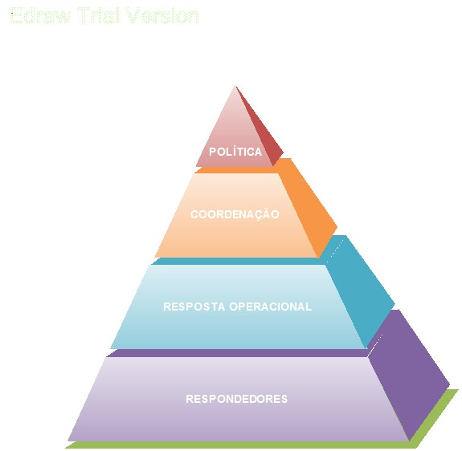

CONSIDERAÇÕES GERAIS
A resposta a um incidente ou operação deve ser proporcional e necessária durante o desenvolvimento de uma estratégia, portanto, os parceiros devem considerar as competências e as políticas que podem estar disponíveis para ajudar a resolver o incidente ou operação.
Sempre que uma resposta multiagência seja necessária, os parceiros devem garantir que estão cientes de todas as competências específicas e políticas que as agências são obrigadas a seguir. Em algumas circunstâncias uma agência pode ter maiores poderes-competência para realizar uma função específica em detrimento das demais. As agências devem também estar cientes de quaisquer limitações que as agências colaboradoras possam ter.
Uma parte crítica do processo de gestão de emergência envolve a preparação para operar um Centro de Operações de Emergência. Um bem concebido EOC pode beneficiar muito a coordenação das atividades de resposta e recuperação através de procedimentos operacionais, papéis individuais claros além de um lugar seguro.
O que é um EOC
O centro de Operações de Emergência é um lugar físico (sala de crise) onde uma ou mais organizações se reúnem durante uma emergência para coordenar as ações de resposta e gestão de recursos. Estes centros podem ser também chamados de Centro de Comando, Salas de Situação, Salas de Guerra, Centros de Gestão de Crise ou outros termos semelhantes. Independentemente do termo, isto é, onde a coordenação de informações e recursos ocorrem, o EOC NÃO é um posto de comando de incidentes (tático/operacional), mas sim, um local onde a coordenação e as decisões de gestão (estratégico) são facilitados.
O EOC é responsável pela análise estratégica, ou “grande visão”, da catástrofe, e normalmente não controlam diretamente os ativos de campo, deixando as decisões táticas e operacionais para os escalões mais subalternos. As funções comuns do EOC é coletar, compilar e analisar dados, tomar decisões que objetivem a proteção à vida, a propriedade e a manter a continuidade das organizações e divulgar as decisões de todas as agências.
O que se espera de um EOC
A maior parte das emergências são administradas pelas primeiras equipes de resposta, bombeiros, policiais e equipes médicas de emergência. Mas em emergências ou desastres de maiores proporções o trabalho das equipes que dão as primeiras respostas, dentre outros, deve ser coordenado para assegurar uma resposta realmente eficaz.
A coordenação eficaz de vários órgãos e agências ajuda a estabelecer as prioridades em termos das respostas e alocação de recursos, solucionando as diferenças entre órgãos/agências, e oferecendo orientação e direcionamento estratégico.
O EOC deve proporcionar um local central para a coordeenação entre os vários órgãos e para o processo decisório executivo em termos do apoio necessário às respostas aos incidentes, por meio da coleta e avaliação da informação, determinação de prioridades e gestão de recursos.
O EOC constitui um elo fundamental na cadeia de respostas a emergências, permitindo que os comandantes na cena (tático/operacional) possam se concentrar nas necessidades do incidente.Tipos de Comando
Comando Unificado: Uma aplicação do Sistema de Commando de Incidentes usado quando há mais de uma agência com jurisdição na cena. As agências trabalham juntas (nível estratégico), em um único Centro de Operações de Emergência, com seus respectivos Comandantes de Incidente (nível tático/operacional).United States Coast Guard
O Comando Unificado é um processo comumente usado em incidentes onde funcionam várias agências ou jurisdições. Elas incluem o estabelecimento de objetivos comuns e estratégias para a gestão de um incidente sem a perda da autoridade das agências, responsabilidades ou controle financeiro.
Para assegurar a resposta coordenada, os recursos operacionais de todas as agências devem estar sob o Comando Unificado, ou seja, passam a pertencer a Operação.
Periodos Operacionais
O período operacional é o momento em que uma dada operação é estabelecida no Plano de Ação de Incidente, A duração do período operacional é determinado pelo Comando Unificado e deve durar entre uma e vinte e quatro horas.
Temas que concernem aos executivos das agências
Existem pelo menos três termos que concernem aos executivos, relativos às suas responsabilidades e papéis na gestão dos incidentes.
Qualquer incidente pode advir de uma mistura política, econômica, social, ambiental, envolve custos e com efeitos de longo prazo. E ainda, cada vez mais acidentes envolvem várias agências ou jurisdições
A estrutura de EOC ajuda a mitigar os riscos ao prover informações acuradas;
Os executivos devem estabelecer a política, provendo as linhas gerais das prioridades, os objetivos e os impedimentos de suas respectivas agências;
Cada agência possui a sua própria hierarquia. Uma vez que o executivo articule a política a ser seguida e delegue a autoridade ao seu grupo operacional, este, deve mantêlo informado sobre todos os aspectos que perpassam a cena do incidente, a fim de que esta informação seja compartilhada com todos, uma vez que a ação de uma agência pode interferir na operação de outra.
O papel do executivo é assegurar que seu grupo operacional está trabalhando de acordo com as estratégias gerais propostas pelo PAI.
Administrador, oficial chefe executivo são sinônimos de executivo de cada agência, designado pela agência que tem responsabilidade no incidente, o título também inclui os executivos do setor privado. Os executivos contribuem no estabelecimento da política da gestão do incidente.
Geralmente o executivo não se encontra na cena do incidente, mas deve ter a capacidade de se comunicar com seu grupo tático/operaciona para transmitir-lhes ordens e receber solicitações/informações operacionais.
Objetivos gerais das principais agências
Geral:
O atendimento à vítimas será, mais frequentemente, a função principal exigida aos serviços de emergência. A responsabilidade pelo resgate dos sobreviventes é do Corpo de Bombeiros. Os cuidados e transporte de vítimas para os hospitais de referência é de responsabilidade do GSE/SAMU. A polícia e a guarda municipal facilitarão as operações.
Polícia:
Corpo de Bombeiros:
Serviço de atendimento pré-hospitalar (GSE/SAMU)
Técnicos especialistas:
Especialistas técnicos são consultores, com habilidades especiais que são necessárias à resposta ao incidente.
O elo crucial na resposta a emergências
O Centro de Operação de Emergência (Sala de Crise), quando acionado na estrutura do Centro Integrado de Comando e Controle, atua em coordenação com os gestores de emergência “in loco” , outras agências e organizações, adquirindo, distribuindo e rastreando recursos, gerenciando e compartilhando informações e estabelecendo respostas prioritárias.
Um Centro de Operaçoes de Emergência apresenta diversas vantagens:

FIGURA : Pirâmide de níveis de competência.
Sistema de coordenação entre órgãos e agências
A maior parte das emergências são administradas pelas primeiras equipes de resposta, bombeiros, policiais e equipes médicas de emergência, mas em desastres de grandes proporções, o trabalho das equipes que dão as primeiras respostas, dentre outras, deve ser coordenado para assegurar uma resposta realmente eficaz.
O Centro Integrado de Comando e Controle através do Centro de Operações de Emergência, constitui um elo fundamental na cadeia de resposta a emergências envolvendo múltiplas agências, permitindo que os respondedores locais possam se concentrar nas respostas operacionais.
Quando esgotam-se os recursos locais ou ocorre a possibilidade do evento prolongar-se ou agravar-se, o estabelecimento de um Centro de Operações de Emergência pode contribuir com mais recursos, apoio e conhecimento especializado, ajudando a estabelecer uma visão comum das operações, facilitando o desenlace de operações de longo prazo e de elevada complexidade.
Grandes eventos ou crises têm diversas necessidades gerenciais que um Centro de Operações de Emergência pode prover:
- Cenário Operacional em comum;
- Direcionamento das políticas;
- Apoio a comunicação;
- Movimentação de recursos críticos;
- Visão geral da situação;
- Administração da informação pública;
- Autorização para despesas emergenciais;
- Provimento e estabelecimento de prioridades para os recursos.
Formação de equipes de Centro de Operações de Emergência
Há vários fatores a serem considerados ao forma uma equipe para o ambiente de crise ou grandes eventos no Centro de Operações de Emergência.
O que deve ser feito ?
É a consideração sobre as funções sobre as funções da agência no contexto da gestão de grandes eventos ou crises.
Qual é a janela de tempo ?
Considerar a possibilidade de haver operações mais extensas, que demanda a criação de equipes de segundo e terceiro turnos, equipes de substituição e de suporte do CICC.
Quem detém o conhecimento, a aptidão e a habilidade para desempenhar tarefas críticas?
Considerar quem detém o conhecimento das tarefas críticas envolvidas no desempenho das funções, e as aptidões necessárias para realizar as tarefas.
Quem tem autoridade para tomar decisões críticas?
Todo o time do Centro de Operações de Emergência operando em um grande evento ou crise deve ser composto pó pessoas que detenham autoridade para implantar políticas de tomadas de decisões no âmbito de sua agência. Essas decisões, entre outras, envolvem financiamento para emergências, execução de ordens, gerenciamento da emergência e até mesmo a possibilidade de contratação de pessoal temporário.
Representantes de agências
Um representante de agência é um indivíduo para quem tenha sido delegada a autoridade para tomar decisões sobre todos os assuntos que afetam a participação da agência no incidente. Cada agência deve atribuir apenas um representante para o incidente, cabendo a ele, as seguintes atribuições:
- Assegurar que todos os recursos da agência foram checados;
- Obter briefing do agente de ligação do Comando Unificado;
- Participar das reuniões para confecção do PAI;
- Empenhar os recursos de sua agência conforme sua atribuição legal competência ou capacidade técnica de acordo com as missões estabelecidas pelo PAI.
É desejável que as equipes do EOC tenham as seguintes valências:
- Capacidade de obter, analisar e agir de acordo com as informações coletadas;
- Flexibilidade diante de condições em constante e rápida mudança;
- Capacidade de prever mudanças;
- Capacidade de manter a confiança da opinião pública;
- Confiabilidade duradoura.
Princípios a serem observados durante a resposta a incidentes
Considerando as particularidades das agências envolvidas na resposta a um incidente, o Sistema de Comando de Incidente prevê 9 (nove) princípios que permitem assegurar o deslanche rápido, coordenado e efetivo dos recursos, minimizando a alteração das políticas e dos procedimentos operacionais próprios das instituições envolvidas:
Planejar de forma conjunta as atividades.
Determinar os objetivos para o período operacional.
Conduzir as operações de forma integrada.
Otimizar o uso dos recursos.
Designar as funções das agências sob um só plano de ação do incidente (Oque ? Quem? Quando? Onde?), cabendo o Como? A cada agência em particular de acordo com seus procedimentos operacionais próprios.
Preparar a documentação situacional para ser apresentada caso seja estabelecido o GGC (Gabinete de Gestão de Crise).
Embora as decisões sejam tomadas em conjunto, deve haver um Coordenador de C2 (Representante da agência com maior jurisdição, competência legal ou expertise para responder ao incidente).
O Plano de Ação do Incidente
Cada incidente, de qualquer porte, necessita de um formulário de Plano de Ação de Incidente. Para a maioria dos pequenos incidentes o plano de ação é desenvolvido pelo comandante do incidente (operação, guarnição etc.) e passado aos subordinados e instanciado aos superiores (centro de operações, supervisão, superiores de dia etc.) de forma verbal ou com os recursos disponíveis. Cenário este, comum no ambiente de CIODES.
Conforme os incidentes avançam em porte ou complexidade, e/ou conforme outras agências são envolvidas, é importante que se documente as informações vitais para serem aplicadas no plano de ação para o incidente.
Em grandes incidentes que ocorram de forma súbita (queda de aeronaves, colapso de estruturas etc.) em que a situação de crise se estabeleça de imediato, a estrutura do Gabinete de crise deve ser estabelecida prontamente, onde cada agência respondedora deve ser atualizada e prover seus planos setoriais estabelecendo políticas conjuntas baseadas nas necessidades do incidente.
Em eventos complexos de evolução gradual (enchentes ou inundações), os representantes das agências, no CIODES, monitoram os parâmetros de níveis de desatre, e caso haja indicação de evolução do incidente, os representantes das agências no CIODES, devem reunir-se e deliberar sobre a necessidade de estabelecimento do Centro Integrado de Operações Coordenadas.
Caso a deliberação não seja favorável à instalação do CIOC, retornam aos seus postos e continuam a monitorar os parâmetros até que outro incidente sinalize a necessidade de nova deliberação.
Caso a deliberação seja favorável a instalação do CIOC, os responsáveis entram em estado de Operações Coordenadas, instanciam seus superiores e iniciam o preenchimento dos formulários, a fim de situar o Comando Unificado ou o GGC sobre o evento, as ações já tomadas e as que estão em andamento, bem como equipamento e pessoal no local além do mapa de comunicações, caso necessitem de contato direto com o teatro de operações. Ato contínuo são tomadas as ações administrativas para operacionalização do CIOC ou da sala de crise, conforme o caso.
Tão logo o comando unificado seja estabelecido (no CIOC) e instanciado sobre o incidente, os representantes no CIODES, retornam aos seus respectivos Centros de Operações e continuam monitorando os parâmetros, não mais os relativos ao incidente em andamento, até que ocorra outra sinalização de deliberação.
Eventualmente, alguma informação sobre a evolução do incidente pode chegar ao centro de operações de alguma agência, que deve de imediato transferí-la para o ambiente de CIOC.
Comunicação e mídia
Costumeiramente, crises atraem o desejo da população sobre informações e nesta esteira a mídia, sobretudo neste caso, onde existe um Centro Integrado de Comando e Controle, por tanto o comando unificado deve se preocupar com a comunicação com a mídia, logo deve organizar um sistema conjunto de informações supervisionado por um responsável pela informação pública.
A informação ao público deve considerar:
- Quem é o público?
- O que o público deve saber?
- Quem fornecerá determinada informação?
- Quem orientará o fluxo de informação?
- Como a informação será transmitida?
- Quando?
- Com que frequência?
Deve-se verificar a eficácia da informação monitorando se o público está respondendo apropriadamente à mensagem de advertência e de emergência e a circulação de boatos;
O sistema conjunto de informações deve estar bem organizado e coordenado a fim de divulgar ao público informações compreensíveis, pontuais, exatas e consistentes em períodos de crises.
Copyright © 2013, TEN CEL BM CESAR RODRIGUES
Created with the Freeware Edition of HelpNDoc: Free help authoring environment